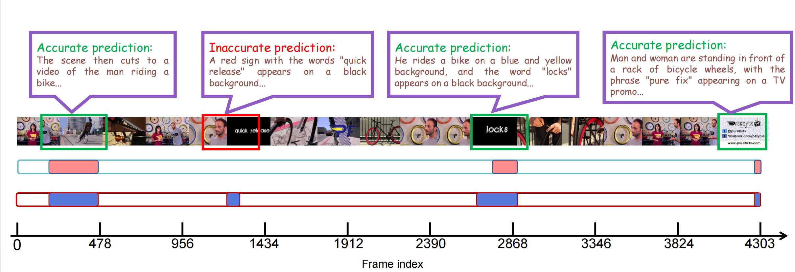

Visualization
The "qqR6AEXwxoQ" in the TVSum .

The "JgHubY5Vw3Y" in the TVSum .

TF-SUM is a novel training-free video summarization framework that utilizes the complementary strengths of pre-trained Large Vision-Language Models (LVLMs) and Large Language Models (LLMs). Unlike traditional approaches that require model training and manual annotations, TF-SUM operates entirely without supervision. It begins by generating textual descriptions for each video frame using a vision-language model and filters noisy captions via cross-modal similarity. Then, an LLM performs hierarchical importance scoring to produce both frame-level and segment-level scores based on the cleaned text. Finally, visual similarity is used to eliminate redundancy and refine the summary. This lightweight yet effective pipeline enables TF-SUM to generalize across video domains without retraining. Experiments on TVSum and SumMe demonstrate that TF-SUM achieves competitive or superior performance compared to state-of-the-art unsupervised methods, while remaining fully training-free and annotation-free.
BibTex Code Here